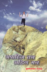
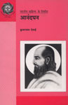

હિંદી પુસ્તકો
| जिनशासन की कीर्तिगाथा (1998) ; अपाहज तन, अडिग मन (2002) ; आनंदघन (2007) ; त्रैलोक्यदीपक राणकपुर तीर्थ (2007) ; भारतीय क्रिकेट ; क्रिकेट के विश्वविक्रम ; क्रिकेट कैसे खेले ? भाग 1 – 2 | ||
|  |
ગુજરાતી સાહિત્યમાં સારી એવી નામના મેળવનાર અપંગનાં ઓજસ પુસ્તકનું લેખકે સ્વયં કરેલું હિંદી ભાષાંતર છે. આમાં વિકલાંગ વ્યક્તિઓએ જેમાં શરીરબળનો મહિમા છે એવા રમતગમતના ક્ષેત્રમાં નોંધાવેલી સિદ્ધિની કથા છે. કોઈ પણ નિરાશ કે હતાશ વ્યક્તિમાં ફરી જીવવાનું જોશ અને ચેતન જગાડે એવા પ્રસંગો છે. |
|
 |
भारतीय साहित्य के निर्माता : 'आनंदघन' |
|
એક પ્રતિભા કેટલાંક ક્ષેત્રોમાં ગતિ કરે એ જોવું હોય તો કુમારપાળ દેસાઈએ હિંદીમાં લખેલાં પુસ્તકો જોવાં જોઈએ. આમાં ક્રિકેટના કસબની સૂક્ષ્મ ચર્ચા કરતા એમનાં પુસ્તકો ક્રિકેટ-સમીક્ષક તરીકેની એમની ક્ષમતાનો પરિચય આપે છે, તો ‘अपाहिज तन, अडिग मन’ અત્યંત પ્રવાહી શૈલીમાં આલેખાયેલું છે. ‘आनंदघन’ વિશેનું એમનું વિવેચનાત્મક પુસ્કતક કે ‘भगवान महावीर’ વિશેનું એમનું પરિચયાત્મક પુસ્તક આ ક્ષેત્રના અભ્યાસીઓને માટે અત્યંત મૂલ્યવાન બની રહ્યું છે. |